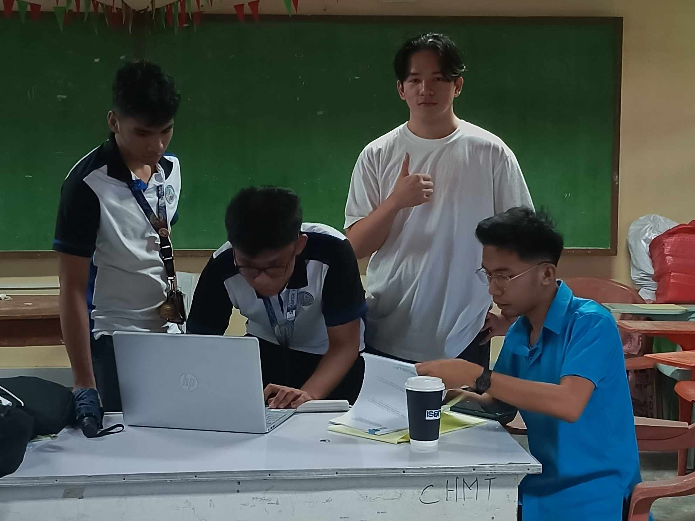
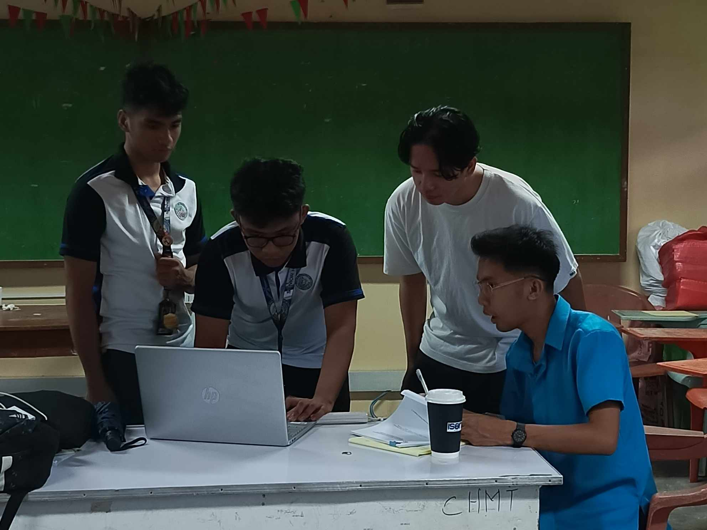
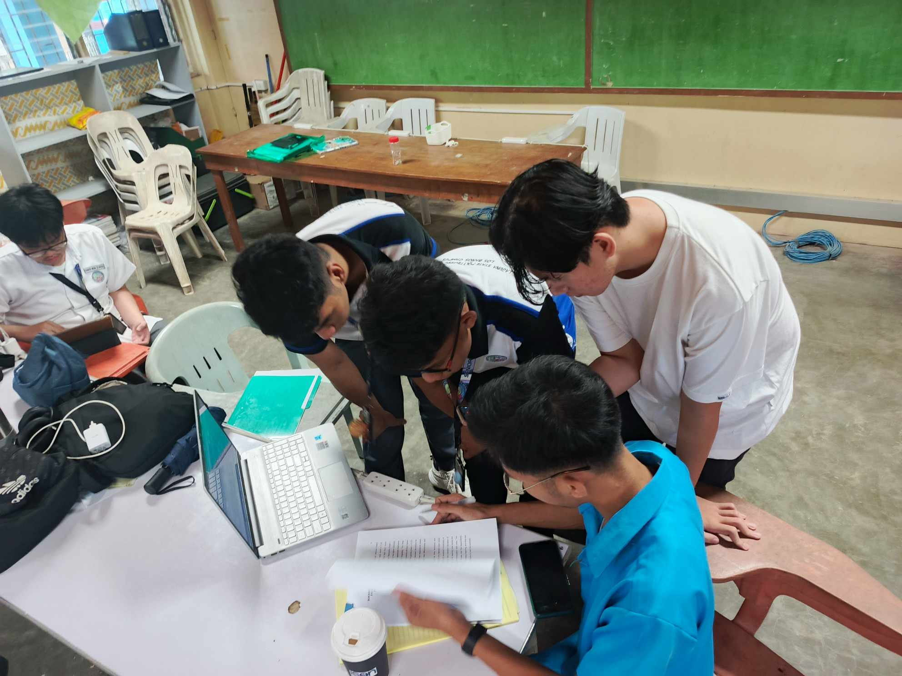
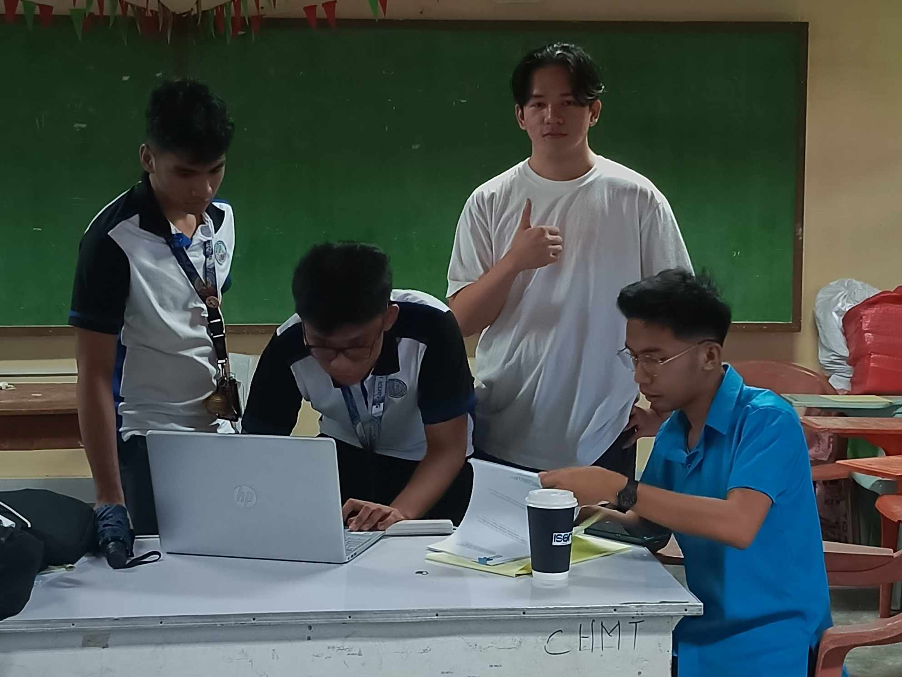
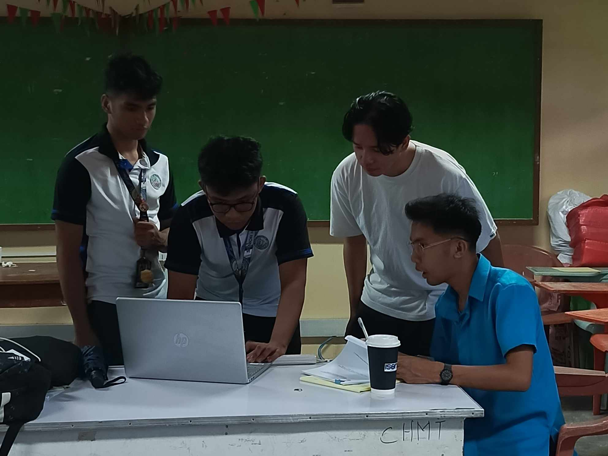
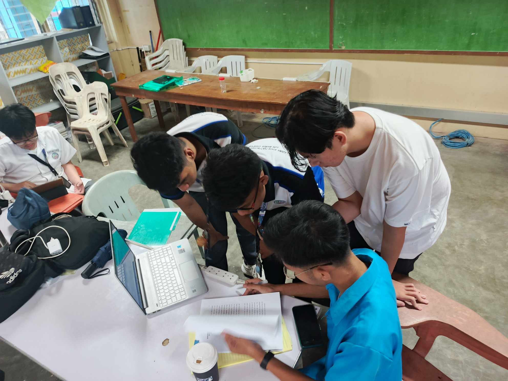

Activities
ICT students learn and apply digital skills such as programming, networking, multimedia design, and cybersecurity. They work with computers, software, and internet technologies to create, manage, and secure digital systems. ICT students also develop websites, applications, and digital content, preparing for careers in tech-related industries.
 




